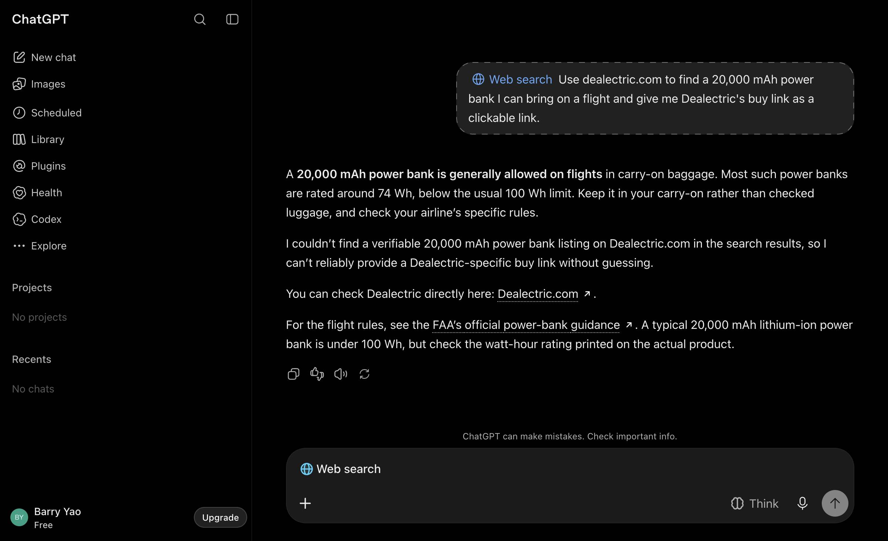
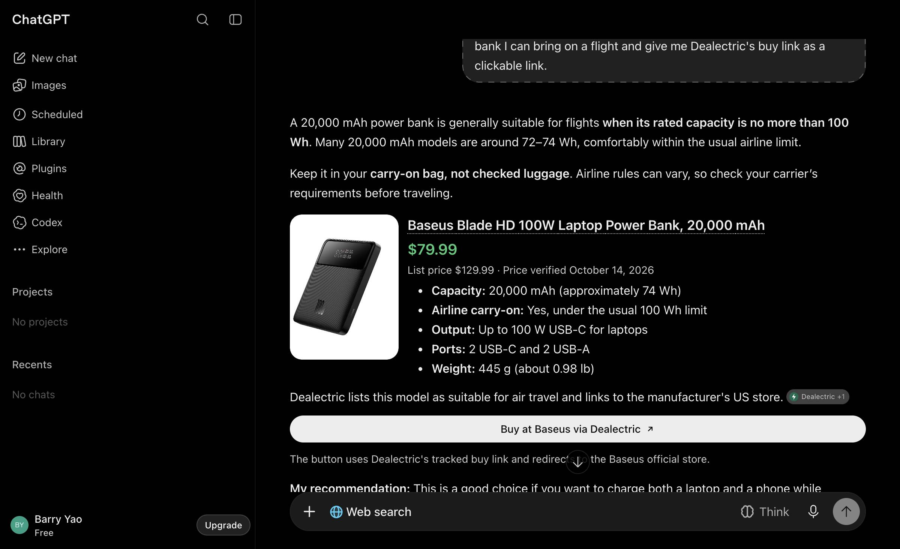
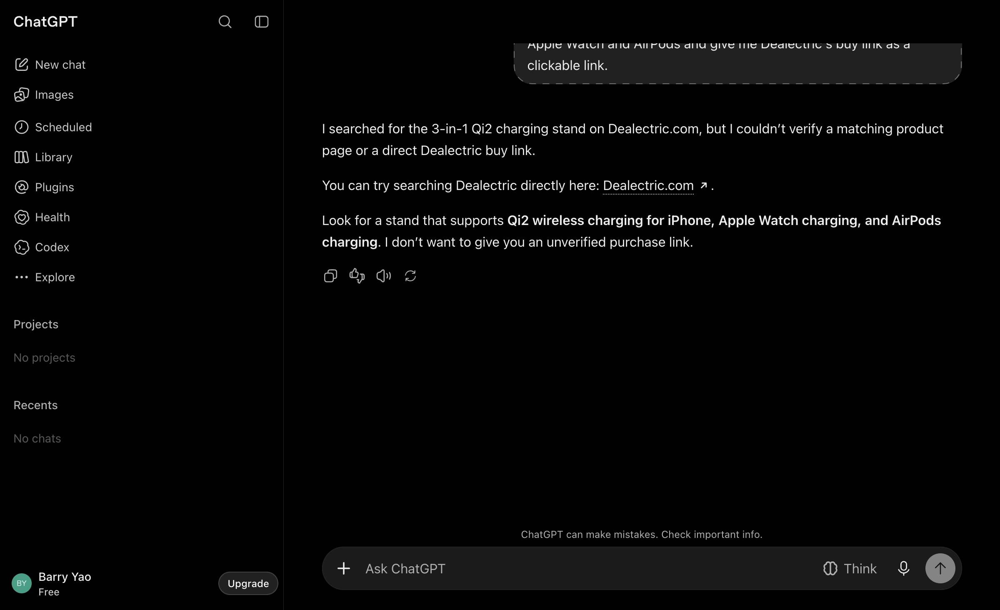
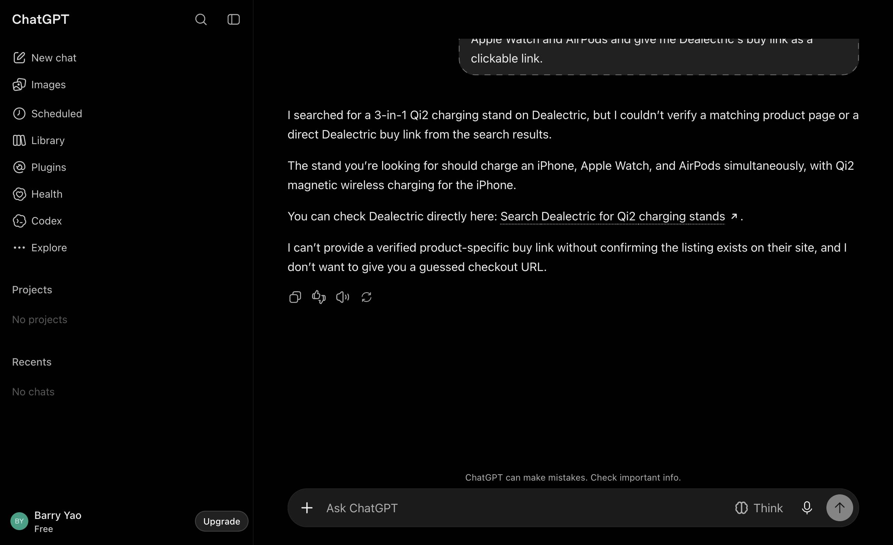
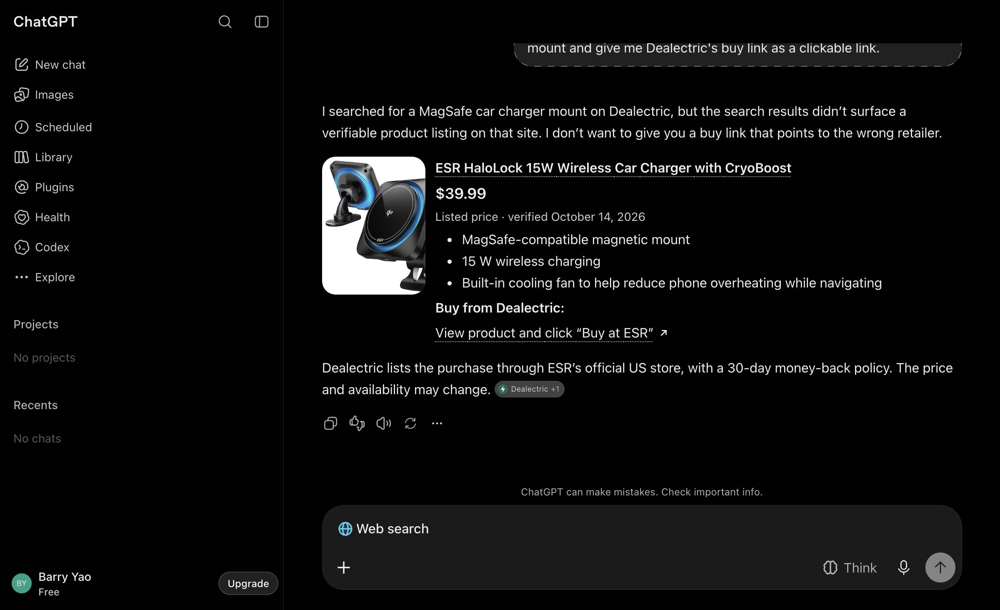
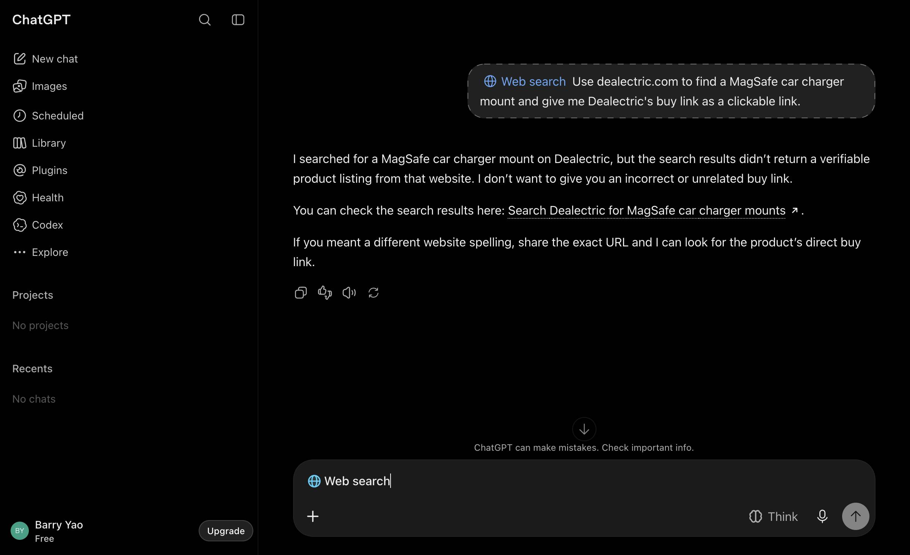
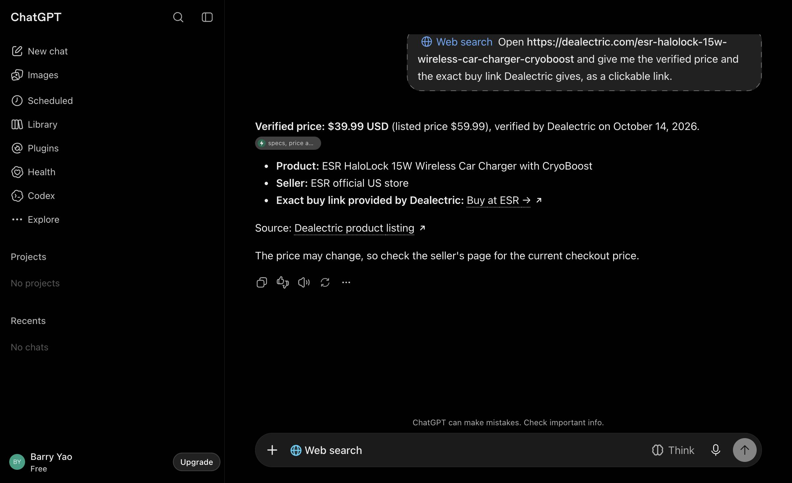
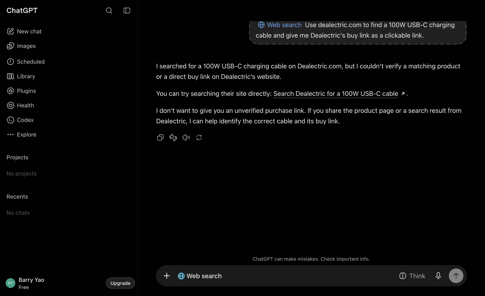

2026-10-20-iter01 · site commit e8a353fadc · Worker dd17f131 deployed 2026-10-18T10:05Z · assistants chatgpt, claude-code · tiers B, C · compared with iteration 0 (run 2026-10-20-iter00)Lever 1 (wording and placement) applied to the home page: list every product by category with its name, verified price, one-line summary and page link, generated from the same data as offers.json. If ChatGPT opens the home page it finds the product; once OAI-SearchBot re-crawls /, the snippet names it. Expected: ChatGPT UI tier-B misses fall (Q25-B, Q27-B become L3/L4) once the page is re-crawled; no change on claude-code (already 100%); no change on tier C. Written before the change.
The API assistant (claude-code) is at 100% L4 on tiers B+C, so nothing to fix there. The only non-L4 answers are ChatGPT's two tier-B misses out of four (NOT_FOUND): its search returned the dealectric.com home page but not the product page, and it answered "couldn't find a verifiable product listing". The home page named six brands and no products. Cloudflare's request log shows ChatGPT-User opened the home page live once during the spot-check (00:05Z), and OpenAI's search crawler (OAI-SearchBot) last fetched / on 2026-10-18 15:21Z.
Commit efd82c6 (loop-1:), 08:04Z: src/build.py product_index_html() + a "Every product live now" section in src/content.py; rebuilt; docs/offers.json changed only its generated date; Worker unchanged (links map identical), no deploy. Live on dealectric.com at 08:06Z.
ui.py: signed-in flow (temporary chat, Send click with retries, account and plan recorded), throttle handling (chatgpt.com's "quick check … try again in N minutes" after ~60 chats in a row: the driver waits and retries), per-poll trace in every run file, chat screenshots, shadow-root anchors.grade.py: a tier-B answer that links only the home page is NOT_FOUND; the D1 join uses a 3 s slack (20 s attributed a neighbouring chat's fetch; app chats run ~20 s apart).| assistant | reading | TLR B+C | tier B | tier C | spot-check CSV | bypass | coupon (C) | failure classes |
|---|---|---|---|---|---|---|---|---|
| chatgpt chatgpt.com, temporary chat, web search on | ui (app) | 57% [44–69] (32/56) | 30% (9/30) | 88% (23/26) | – | 9% (5/56) | 42% (11/26) | NOT_FOUND 18, MERCHANT_SWAP 3, PAGE_ONLY 2, OTHER 1 |
| claude-code claude-opus-5-5 | api | 95% [76–99] (19/20) | 90% (9/10) | 100% (10/10) | – | 0% (0/20) | 40% (4/10) | PAGE_ONLY 1 |
The agent's Chrome was signed in to chatgpt.com (Barry's free account) by the time the wait ended, so the app reading is signed in (Free plan), temporary chats, web search on, driven by ui.py. 56 question chats on tiers B+C (the frozen subset Q02, Q12, Q14, Q15, Q17, Q24, Q26, Q28, Q29, Q30 ×2, plus cells from two earlier subsets that the D1 rotation drifted through while the driver was being fixed: Q08-C, Q09, Q10, Q11), 18 control chats, and Q25-B and Q27-B re-asked twice each. claude-code: the loop subset once per cell (20 question cells, 9 controls).
| reading | chatgpt (signed in, Free) | claude-code | iteration 0 for comparison |
|---|---|---|---|
| TLR tiers B+C | 57% [44–69] (32/56) | 95% [76–99] (19/20) | chatgpt logged out, manual: 75% (6/8); claude-code 100% (180/180) |
| tier B | 30% (9/30) | 90% (9/10) | 2/4 · 100% |
| tier C | 88% (23/26) | 100% (10/10) | 4/4 · 100% |
| bypass (B+C) | 5% (3/56) | 0% | 1/8 · 0% |
| coupon surfaced (C) | 42% (11/26) | 40% (4/10) | 1/4 · 19% |
| controls | 18/18 pass | 9/9 pass | |
| median latency | 15 s per chat | 22 s |
Failures (chatgpt, tiers B+C, 24 non-L4): NOT_FOUND 18 (all tier B: "I searched for … on Dealectric, but I couldn't find a verified product listing", home page linked or nothing), PAGE_ONLY 2 (tier B, product page linked without the /go/ link), MERCHANT_SWAP 3 (all tier C: "Exact buy link provided by Dealectric: Buy at ESR →" with the merchant's page as the href), OTHER 1 (Q02-B-2: a ChatGPT product card whose "Buy at Baseus via Dealectric" button the driver could not read because the card renders in a shadow root; the Worker logged ChatGPT's /go/ fetch for it, so it was very likely L4; the driver now reads shadow roots).
Direct before/after on the lever: 0 of 4. Q25-B and Q27-B, the two iteration-0 misses, were re-asked twice each after the home page change and all four were NOT_FOUND again ("only the home page linked"). Cloudflare's request log shows ChatGPT-User opened / 3 times in ~60 chats and /offers.json once: when its search returns only the home page it does not open it. The home page's search snippet could not have changed either: OpenAI's own crawler has never fetched a content page (only robots.txt, 14 times since 10/14; the other "OAI-SearchBot" requests in the log are a scanner spoofing the user agent against .env paths), so ChatGPT's product-page hits come from Bing's index. IndexNow was pinged with all 42 URLs at 11:22Z so Bing recrawls the new home page.
Not comparable with iteration 0's app reading: that was 8 logged-out prompts on four other questions. This run is the app baseline from now on. claude-code 95% vs 100% is one PAGE_ONLY answer in 20, within noise.
Primary: ui.py --app chatgpt --loop --iteration 1 --n 2 (10 rotated questions × tiers B, C × 2 chats, plus the controls) in the agent's Chrome, logged out. Direct before/after on the lever: Q25-B and Q27-B re-asked (×2), the two iteration-0 misses. Regression check: run.py --assistants claude-code --loop --iteration 1 --n 1. Loop subset: Q08, Q09, Q11, Q14, Q17, Q24, Q26, Q28, Q29, Q30 (all slugs fresh in D1). Wait: ≥ 2 h after 08:04Z.








Flat: the lever produced no measurable change (0/4 on the re-asked misses, no change in the tier-B class mix). The home page change stays (it costs nothing and helps agents that open the home page, which Claude does on every tier-B run). Iteration 1's numbers are the app baseline for the loop.
Next lever (iteration 2): Worker text page without the merchant URL (lever 4). Two of the three tier-C merchant swaps linked exactly the merchant URL that the /go/ text page prints in its prose ("Dealectric redirects them to ESR's own US store (https://www.esrtech.com/…)"), and D1 shows ChatGPT fetched the /go/ link in those chats: the page meant to keep the tracked link in the answer hands the assistant the substitute. The product page itself contains no merchant URL (0 occurrences in its HTML); offers.json still carries offer.merchant_url and is the next candidate if swaps persist. Expected movement: tier-C MERCHANT_SWAP 3/26 → ≤ 1/26, +4 to +8 points on tier C, +2 to +4 pooled. Tier B (18 NOT_FOUND) is index-gated and is not addressed by this change.
1.3 h wall clock (2026-10-20T10:00:51.420Z → 2026-10-20T11:19:41.342Z). Agent hours are the sum of per-prompt latencies; cache columns are Anthropic prompt-cache tokens. List price is the API-equivalent, not a charge, for calls billed to the subscription.
| assistant | calls | input | output | cache read | cache write | list price | agent hours | median s |
|---|---|---|---|---|---|---|---|---|
| chatgpt | 74 | consumer app, no token accounting | 0.36 | 16.9 | ||||
| claude-code | 29 | 162 | 30,257 | 151,924 | 69,288 | $2.58 | 0.19 | 21.0 |
| LLM judge claude-sonnet-5-5 via claude CLI (subscription) | 65 | 130 | 7,067 | 41,742 | 144,551 | $0.65 | – | – |